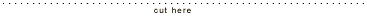

Watch Split Screen on The Criterion Channel
Watch all 10 Seasons of Split Screen on The Criterion Channel now.
Read More...

IndieWire: On Screen and In a New City, Austin Embraces The Pierson Family
Indie film guru John Pierson goes native, sort of, in "Reel Paradise," an engaging docu about his year-long
stint showing free movies to the locals at what's purportedly
the world's most remote cinema, the 180 Meridian in Taveuni, Fiji.
Read More...
Reel Paradise
Reel Paradise World Premiere, Sundance Film Festival Saturday
January 22 @ 2:30. Directed by Steve James. A View Askew
Production.
Read More...
NY Times: Fiji Favorites: Guys in Dresses
The Piersons are back, and the New York independent film community is happy to see them home.
Read More...
Kevin Smith and Scott Mosier to exec-produce 'Reel Paradise'
Kevin and Scott to exec-produce "Reel Paradise," a docu to be released by Miramax about indie distribution vet John Pierson and the year he spent owning and operating the world's most remote movie theater, in the Fiji bush.
Read More...
Res Magazine: Ten Stellar Cinemas
Res Magazine includes the 180 Meridian Cinema as one of their Ten Stellar Cinemas.
Read More...
"General Fiji report - March" by Janet Pierson
Janet Pierson sends in a update from Fiji...
Read More...
People Magazine: The Piersons: A Movie Honcho Moves His Family to Fiji
If Jennifer Lopez ever washes up on the beaches of Taveuni, Fiji, she'll find she has fans. "Everyone here
loves J. Lo," says John Pierson, owner of the Meridian 180, the island's only movie theater.
Read More...
Georgia Pierson's Take on Fiji
Life in Fiji, as written by Georgia Pierson, John and Janet Pierson's 15-year-old daughter.
Read More...
LA Times: Showing free movies in Fiji: Is he an ugly American?
Showtime. Saturday night. As I stood in the funky lobby of Fiji's 180
Meridian Cinema, Vin ("XXX") Diesel coolly played his "new breed of secret
agent" to a full house inside. I was not cool. I was squirming because I
actually thought I might go to jail for refusing to charge admission at my
theater. Read More...
"The First Two Months" by Janet Pierson
We're doing great! It's gorgeous here, truly is picture-postcard-perfect
and once I got over my initial shock at how poor everyone was, I started
to be able to really enjoy the beauty and simplicity.
Read More...
LA Times: Isle of Forgotten Fans
I recently became the proud owner of the world's most remote movie theater. A year from now,
you could be wearing a T-shirt that says, "I saw it at the 180 Meridian Cinema." At least
that's how I see it. Read More...